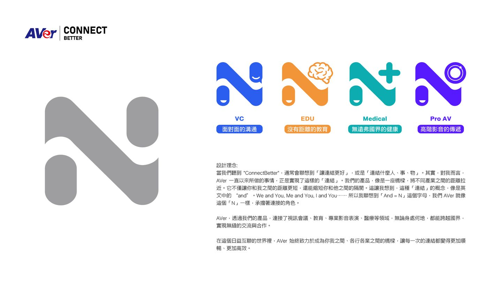
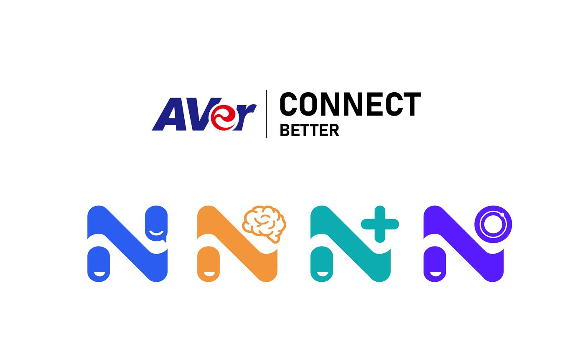
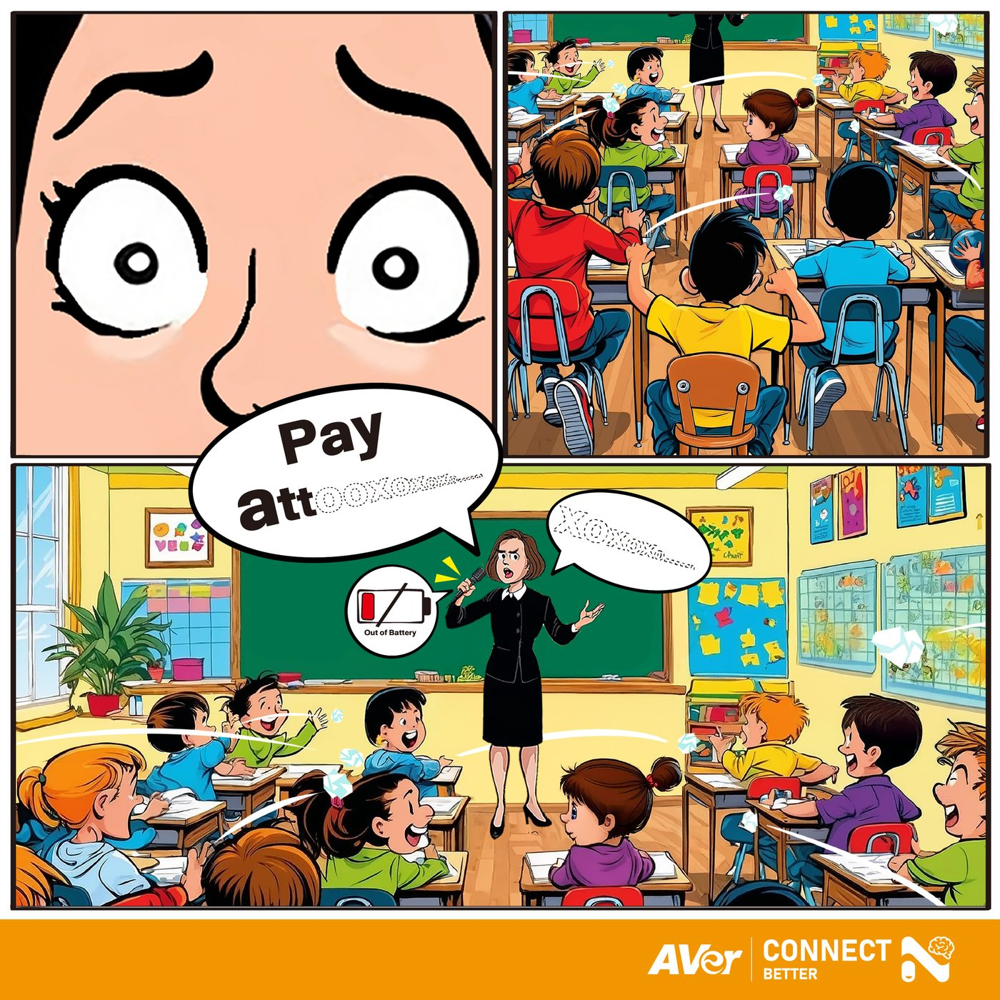
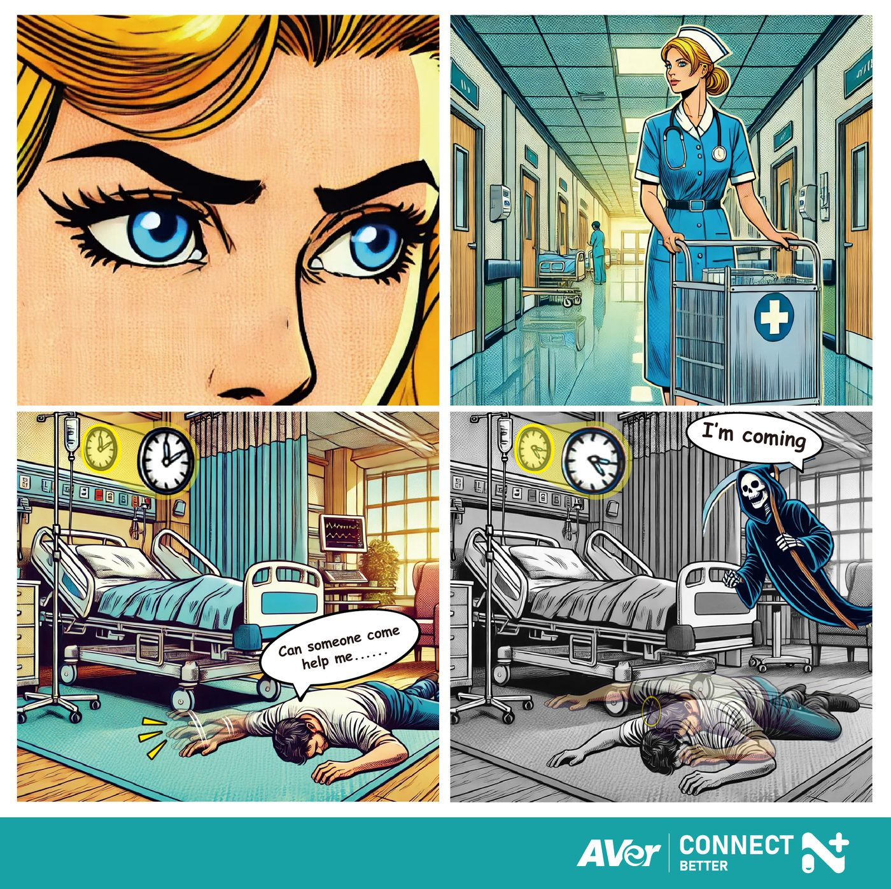
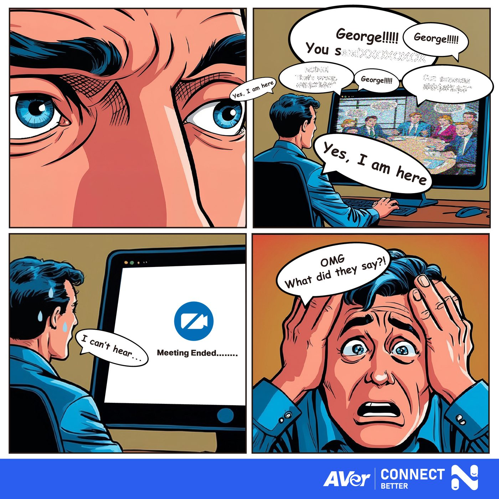

Connect better 專案製作
At AVer, “Connect Better” is all about bringing people closer together, whether across cities or within the same room. We believe in fostering stronger connections through cutting-edge technology that enables seamless communication and collaboration. By enhancing the way people interact — be it in education, healthcare, business, or personal relationships — we help create better, meaningful experiences that bridge gaps and bring people closer together, no matter where they are.
We chose the letter "N" to represent Connect Better because "n" often stands for "and" — a word that naturally connects words and ideas. Just like 'and,' our mission is to strengthen connections between people, sparking deeper and more meaningful interactions that bring us all closer together.




